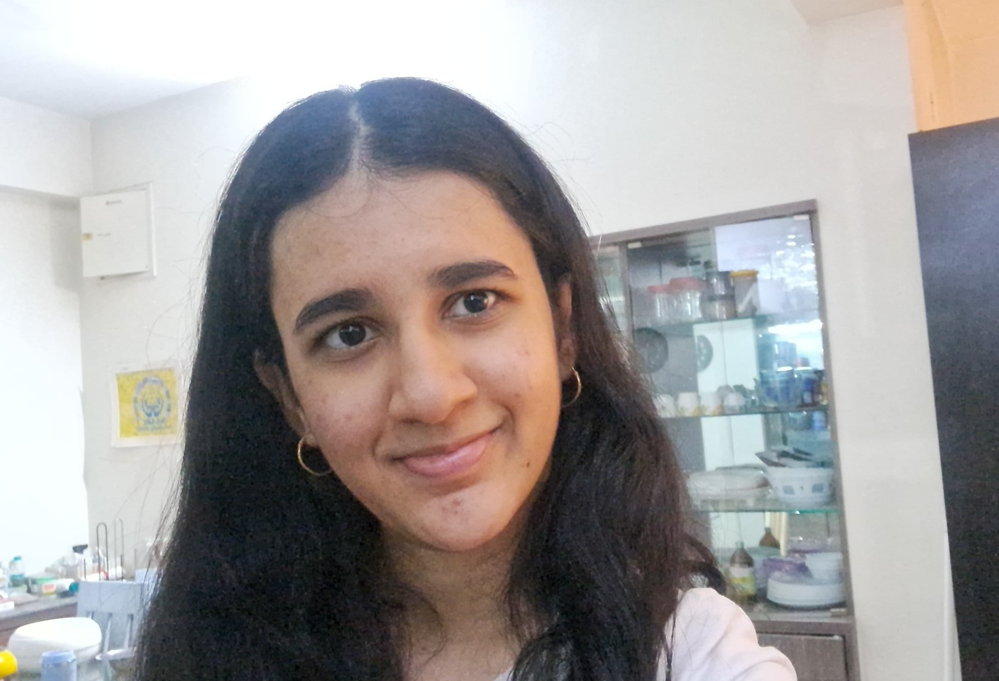

Ahmedabad University
BSc (Hons) in Computer Science and MSc in Quantitative Finance (2026-2031)
Tanishka Santosh DeshmukhAspiring Data Scientist | Student at Ahmedabad University and IIM Bangalore  |
Jump to: About | Education | Activities | Studies | Project | Hobbies
An 18-year-old from Pune, currently living in Ahmedabad. I am pursuing a Bachelor of Science in Computer Science from Ahmedabad University and a BBA in Digital Business and Entrepreneurship from IIM Bangalore.
Career goal: To build a career in Data Science, driven by natural curiosity and a love for analytical thinking.
BSc (Hons) in Computer Science and MSc in Quantitative Finance (2026-2031)
BBA in Digital Business and Entrepreneurship (2026-2029)
9th Grade to 12th Grade
Nursery to 8th Grade
| Category | Topics |
|---|---|
| Computer Science and Data Science | Python, C, HTML, CSS |
| Business and Management | Financial Accounting and Marketing |
| Mathematics and Statistics | Descriptive Statistics and Discrete Mathematics |
Used: Python, Pandas, Google Colab and Excel
Overview: Conducted exploratory data analysis and statistical investigations on 1,338 medical insurance records to evaluate risk factors impacting medical bills.